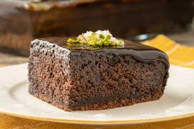

...Bol Soslu Islak Kek ...
Bol soslu yumuşak bir kek...Yalnızca yarım saat içinde lezzetli bir tat ...Buluşmaların ve sohbetlerin tercih edilen tatlısı ıslak keki her zaman sunabilirsiniz.
Tarif: Elif Aşık
**12-14 kişilik** **15 dk Hazırlama Süresi** **35 dk Pişirme Süresi**